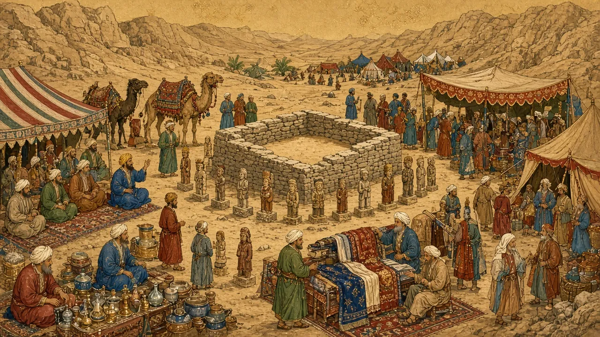
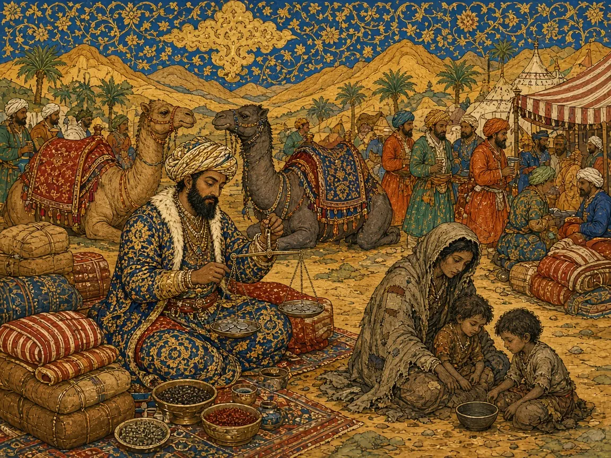
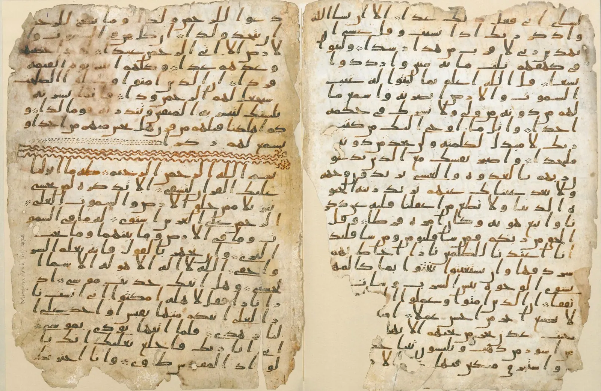
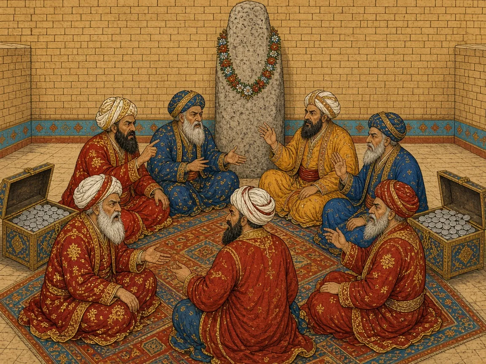
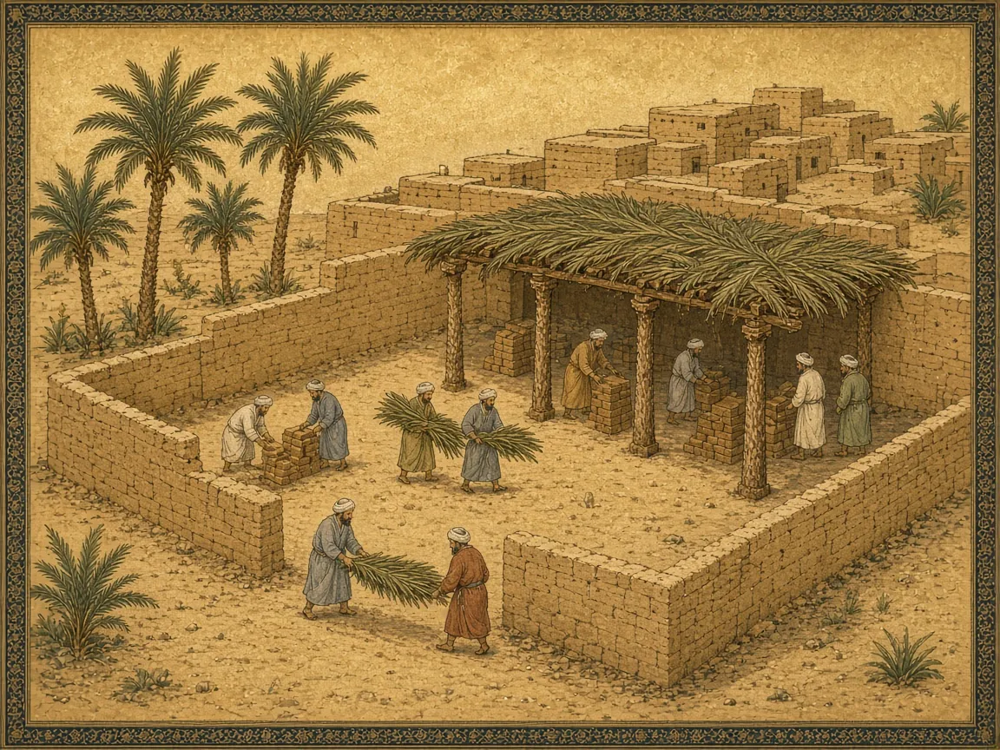

Mecca, today
“There is no god but God, and Muhammad is God’s prophet”
- These words open the chapter: Islam’s main statement of belief
- Every day, millions of Muslims face this cube-shaped shrine in Mecca to pray
- Every year, about two million pilgrims circle it during the Hajj
- Lecture 4 walks you through that pilgrimage; today, we meet the man and the city behind it
Who are the Muslims?
About Two Billion Submitters
- The chapter says about 1.3 billion, almost one in five people
- Pew Research Center now counts about 2 billion Muslims, roughly one in four people (2020 data, published 2025)
- Most Muslims live in South and Southeast Asia, not the Middle East: Indonesia alone has about 200 million
- Projection: by 2050 India may have the most Muslims of any country
Where Muslims live: a world map


Review Question 1 · pp. 292–293
Islam Means “Submission,” Not “Peace”
islam = “submission”
Muhammad and his first followers called their movement Islam, submission to God. A Muslim is a “submitter.”
salam = “peace”
Related to islam but a different word. Muslims see peace as coming from submission.
- Older and newer names: Moslem, Mohammedanism, Islamist
- The name points to God, not to Muhammad: the faith is about surrendering to God’s will
Peace is a fruit of Islam; submission to God is its meaning.
Chapter 12 Review Questions
Checkpoint: Review Question 1
Review Question 1 · Checkpoint
What is the significance of the literal translation of the word “Islam”?
- Find the two anchor sentences on p. 292 (“Muhammad and his…” and “Although Muslims see…”)
- Explain the difference between islam and salam in your own words
- Review: Islam Means “Submission”
Before we begin · p. 292
Four Puzzles for Newcomers
Centered on Muhammad?
Muslims say “Peace be upon him” after his name, yet he is not worshiped: he was the human conduit of God’s revelations.
Religion and state
From the start Islam has preferred to be both. It is the official religion in 25 nations.
Who speaks for Islam?
No one can speak for all Muslims. Veil laws, for example, differ from nation to nation.
Violence?
The vast majority of Muslims, today and in the past, do not engage in or support violence for their faith.
Arabia in the 500s · p. 293
Mecca in the “Age of Ignorance”

- Arabs worshiped many gods; Muslims later called this the “age of ignorance”
- Mecca was the region’s pilgrimage center: a cube-shaped shrine to the god Hubal, statues of the three “daughters of Allah,” and a sacred well
- “Tribal humanism”: loyalty, bravery, protecting the weak, little hope of an afterlife; the desert was full of spirits
Money, faiths, and seekers · p. 293
Caravans, Cash, and the Hanifs

- Camel caravans made Mecca’s trade lucrative; new wealth split rich from poor
- Jews, Christians, and Zoroastrians lived in and around Arabia; belief in one God was in the air
- Some Arabs, the hanifs (“pious ones”), already worshiped one God
ca. 570 · pp. 293–294
An Orphan of the Quraysh
- Born about 570 in Mecca, into a humble branch of the powerful Quraysh tribe
- Orphaned young and raised by relatives, who could not afford schooling
- Worked as a camel driver, then a caravan manager, on routes like these
- Too poor to marry at the usual age
Map: ancient Arabian trade routes (Wikimedia Commons, CC BY-SA 4.0)

ca. 595 · p. 294
Khadija

- Khadija, a wealthy widow in the caravan trade, hired him and suggested marriage; she was fifteen years older
- While she lived, he took no other wife
- Six children: four girls and two boys, but the boys died in childhood
- After her death he married again: see his later marriages
610 · p. 294
“Recite!”
- In 610 Muhammad was meditating for days in a cave on a mountain outside Mecca
- Muslims believe the angel Gabriel spoke to him: “Recite!” (Qur’an 96)
- Tradition dates the first revelation to the 27th night of Ramadan; the month-long fast celebrates it
- “The uncertain seeker of truth became a bold prophet”
The early message · p. 295
One God, One Judgment
Theme 1: One God
Only one God exists, Allah (“the God”), who commands people to believe in this one God and submit to God’s holy will.
Theme 2: Judgment Day
A day of judgment will certainly come: submitters rewarded forever, others punished eternally.
- Also: generosity to the poor, widows, and orphans; God’s goodness in nature; Muhammad’s prophetic call
- From the beginning, Islam stood in the line of the Abrahamic monotheisms
Birmingham Qur’an folios; parchment radiocarbon-dated ca. 568–645

ca. 613–619 · p. 295
“Only a Poet”

- Public preaching began probably around 613; in ten years Muslims numbered in the thousands, mostly young and of lower status
- Mecca’s leaders saw social deviants who threatened the city’s gods and its economy
- They ridiculed him as a lunatic, “only a poet” (Qur’an 52:30–49), and asked for miracles; he answered that the revelations themselves were the sign
- 619: Khadija and his protecting uncle both died, and persecution escalated
622 · Review Question 2 · p. 295
The Hijra: Flight to Medina
- In 622 the Prophet and his followers fled Mecca for Medina (then Yathrib), about 200 miles north
- Hijra = “flight”; it marks year 1 A.H., “in the year of the flight”
- Muslims count years from here, much as Christians use A.D.: the Islamic calendar
- Medina welcomed them, and Muhammad was soon in charge of the fractious town
Medina, 622–632 · p. 295
Prophet and Statesman

In Medina, Muhammad became a prophet-statesman, the founder of a political order and eventually of an empire that would change the history of the world.
Daniel Peterson, quoted on p. 295
- The umma: one community of believers, bound by faith instead of tribe
- Medinan revelations gave legal principles and the details of prayer, fasting, charity, and pilgrimage: the future pillars
Chapter 12 Review Questions
Checkpoint: Review Question 2
Review Question 2 · Checkpoint
What happened during the event known as the Hijra in 622 C.E.?
- Find the two anchor sentences on p. 295 (“In 622 C.E.,…” and “This relocation is…”)
- Say where, how far, and why it starts the Islamic calendar
- Add how the move changed Muhammad’s role and created the umma
- Review: The Hijra and Prophet and Statesman
624–629 · p. 295
Badr, and a Break with Medina’s Jews
- Muslims raided Meccan caravans until victory at the Battle of Badr (624), “a turning point in the fortunes of Islam”
- A pact had promised Medina’s Jews religious freedom; the chapter reports that after a failed assassination attempt, hundreds were killed and the rest expelled (624–627)
- Prayer now faced Mecca, not Jerusalem (Qur’an 2:142); the Ramadan fast replaced a ten-day fast tied to the Jewish Day of Atonement

630 · p. 295
Mecca Without a Fight
- Many Arab tribes joined Islam while Muhammad ruled Medina
- In 630 Mecca surrendered to his army without a fight
- All the idols were removed; only the cubic building and its holy stone were left
- Mecca stayed the goal of pilgrimage; Muhammad lived in Medina for the rest of his life
632 · p. 296; Map 12.1, p. 297
Arabia United, 632

- Muhammad raised armies to conquer northern Arabia, taking on the Christian Byzantine Empire
- In 632 he died in Medina, ruling nearly all of Arabia
- He had not publicly named a successor, and he had no surviving son
- The question for Lecture 2: who should lead now?
Map: expansion of Muslim rule, 622–750 (Wikimedia Commons, CC0)
Check Yourself
Check Yourself: Mecca to Medina
What does Islam literally mean, and what does Muslim mean?
Islam means “submission” to God; a Muslim is a “submitter.” Review
Why is “Islam means peace” misleading?
Salam (peace) is a related but different word; Muslims see peace as coming from submission. Review
Who were the hanifs?
Pre-Islamic Arabs who worshiped one God. Review
What happened in 610, according to Muslim belief?
The angel Gabriel commanded Muhammad, “Recite!” Review
What was the Hijra, and why does it begin the calendar?
The 622 flight from Mecca to Medina (Yathrib), 200 miles north; year 1 A.H., when the umma began. Review
What happened in 630 and in 632?
Mecca surrendered without a fight (630); Muhammad died ruling nearly all of Arabia (632). Review
Required Study · Boxed feature, p. 294
The Symbol of Islam?
- The crescent and star was the emblem of the Ottoman Empire (about 1300 to 1920), not of Islam as a whole: “no more than five hundred years old”
- The legend that the croissant was invented in Vienna to celebrate the Ottoman defeat of 1683 has no solid evidence
- Crescents on mosques recall God’s rule over creation and the lunar calendar
- The box’s conclusion: “Islam has no official symbol”

Required Study · pp. 293, 296, 306
Why These Decks Never Picture the Prophet

- Muslims make no images of God; most also avoid pictures of Muhammad so that no one is tempted to idolatry
- If Muhammad is depicted at all, the chapter says, his face is omitted; some Persian and Turkish art did show it
- The Message (1977) and its remake never show his face or let you hear his voice
- Ottoman artists made the hilye: a portrait in words
Required Study · p. 294
Where Did Muhammad’s Monotheism Come From?
Traditional Muslim teaching
Muhammad obtained monotheism from Allah, through Gabriel. Tradition adds that he could not read, so the Qur’an could not be borrowed from books.
Much current scholarship
His contact with Jews, Christians, Zoroastrians, and hanifs likely helped shape his faith as he began to doubt his inherited religion.
What both accept
He lived where belief in one God was known, and he preached it with new force in Arabic.
Your job
Report both views fairly, and always say whose view you are giving.
Required Study · pp. 307, 311, 319
The Night Journey and Ascension
- The hadith tell of Muhammad’s Night Journey from Mecca to Jerusalem and back, and his ascent to heaven while in Jerusalem
- The Qur’an alludes to the journey in 17:1
- The Dome of the Rock (seventh century) covers the rock of the ascent; Muslims call the site the Noble Sanctuary
- The third holiest site in Islam
Required Study · p. 295 (bridge to Lecture 4)
How Medina Reshaped Muslim Worship
Direction of prayer
From Jerusalem to Mecca (Qur’an 2:142): the qiblah of every mosque since.
Fasting
The month-long Ramadan fast replaced a ten-day fast tied to the Jewish Day of Atonement.
Pilgrimage
First Muslim pilgrimage to Mecca in 629; pilgrimage to Jerusalem fell in importance.
Law and pillars
Medinan revelations gave details of prayer, fasting, charity, and pilgrimage.

Required Study · pp. 291–292, 320–321
Where Muslims Live: Then and Now

| Textbook (2018) | Newer (outside the textbook) | |
|---|---|---|
| World | about 1.3 billion, almost 1 in 5 | about 2.0 billion, 25.6% (Pew, 2020 data) |
| Indonesia | around 200 million | about 239 million (Pew, 2020 data) |
| India | may reach 311 million by 2050 | about 213 million (Pew, 2020 data) |
| U.S. / N. America | 8 million in N. America (p. 291); 2.7 million in U.S. (p. 321) | U.S. about 3.45 million (Pew, 2017) |
| Europe | 15 million (p. 291); 14 million (p. 320) | about 46 million, 6% (Pew, 2020 data, incl. Russia) |
For the quiz, know the textbook figures; for the real world, know the newer ones.
Required Study · Islam Timeline, p. 325
Islam Timeline, Part 1: 570–632
| Date | Event | Where taught |
|---|---|---|
| 500s | Mecca a pilgrimage and trade center; many gods; hanifs | Age of Ignorance |
| ca. 570 | Birth of Muhammad in Mecca | Orphan of the Quraysh |
| ca. 595 | Marriage to Khadija | Khadija |
| 610 (timeline: ca. 609) | First revelation: “Recite!” | Recite! |
| ca. 613 | Public preaching begins | Only a Poet |
| 619 | Deaths of Khadija and Muhammad’s uncle | Only a Poet |
| 622 | Hijra to Medina; year 1 A.H. | The Hijra |
| 624–629 | Badr; break with Medina’s Jews; first pilgrimage (629) | Badr |
| 630 | Mecca surrenders; idols removed | Mecca Without a Fight |
| 632 | Death of Muhammad in Medina | Arabia United |